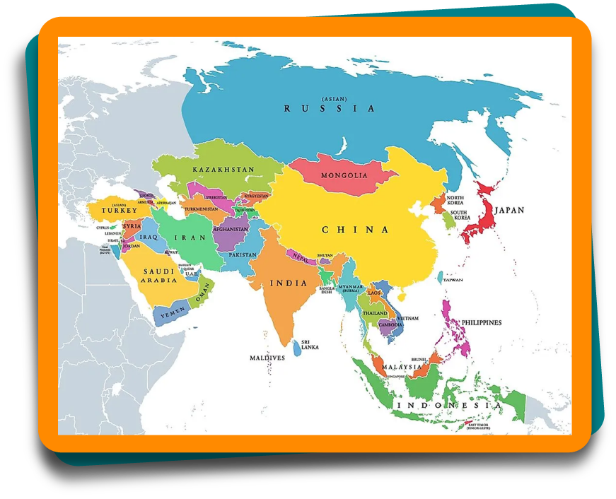

Ciências humanas e sociais aplicadas
A realidade das mulheres no mundo: o caso do Oriente Médio
A Ásia e a divisão territorial: o Oriente Médio
A Ásia é o maior continente do mundo, tanto por sua extensão territorial quanto por sua população absoluta . É composta por 50 países, tendo uma vasta diversidade cultural, étnica e religiosa. É comum pensar que esse continente é único, que os asiáticos são todos parecidos, com características físicas em comum, como os olhos e a cor de pele, que comem comidas exóticas , como insetos, que todos os indivíduos seguem a mesma religião e tem avanço tecnológico muito superior ao do Brasil.
Entretanto, assim como na América, esse continente tem características bem específicas, conforme o país ou a região analisada. É necessário visualizar esses países para entender um pouco mais sobre a região estudada neste tópico.
No mapa a seguir, é possível visualizar o continente asiático e seus países: Afeganistão, Arábia Saudita, Armênia, Azerbaijão, Cazaquistão, Catar, China, Coreia do Norte, Coreia do Sul, Emirados Árabes, Filipinas, Geórgia, Iêmen, Índia, Indonésia, Irã, Iraque, Israel, Japão, Jordânia, Líbano, Malásia, Mongólia, Nepal, Paquistão, Rússia, Síria, Sri Lanka, Tajiquistão, Tailândia, Turquia, Vietnã e uma parte do Egito.

Figura 2 – Mapa-múndi com destaque para o continente asiático
Fonte: Mendão (s.d.)
Ilustração de parte do mapa do mundo, com destaque colorido para os países que fazem parte do continente asiático, como Rússia, Cazaquistão, Mongólia, China, Índia, Arabia Saudita, Turquia, Irã, Indonésia, Malásia, Filipinas, Indonésia, Irã, Iraque, Israel, Japão, Jordânia, Líbano e Nepal.
Dessa forma, será estudada a localização do Oriente Médio no continente asiático, visto que este módulo foi iniciado com a violação dos direitos das mulheres no mundo, principalmente em países do Oriente Médio, que figuram como os maiores violadores desses direitos.
O Oriente Médio recebe esse nome por sua localização estratégica, entre o continente africano e o europeu, dividindo o mundo entre o oriente e o ocidente . Os países que estão nessa região são: Afeganistão, Arábia Saudita, Barein, Catar, Emirados Árabes Unidos, Egito, Iêmen, Irã, Iraque, Israel, Jordânia, Kuwait, Líbano, Omã, Síria e Turquia. Clique sobre o mapa a seguir e veja essa região do globo terrestre.